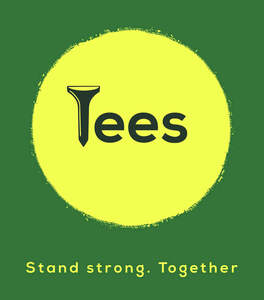

Trade Mark Journal No.2025/027 4 July 2025
UK00004222478 21 June 2025 (9,25,28,41,42)

- Class 9
- Platform software; Downloadable computer software for blockchain technology; Computer software platforms; Computer software platforms for social networking; Application software for social networking services via internet; AI software.
- Class 25
- Clothing; Knitwear [clothing]; Ready-to-wear clothing; Woolen clothing; Headbands [clothing]; Headbands for clothing; Gloves [clothing]; Gloves as clothing; Clothes; Jerseys [clothing]; Shorts [clothing]; Cashmere clothing; Leather (Clothing of -); Parts of clothing, footwear and headgear; Knitted clothing; Windproof clothing; Embroidered clothing; Belts [clothing]; Belts for clothing; Wristbands [clothing]; Waterproof clothing; Rainproof clothing; Casual clothing; Visors [clothing]; Jackets being sports clothing; Jackets (Stuff -) [clothing]; Stuff jackets [clothing]; Playsuits [clothing]; Bottoms [clothing]; Ready-made clothing; Clothing for leisure wear; Infant clothing; Clothing for sports; Sports clothing; Athletic clothing; Leisure clothing; Ties [clothing]; Clothing for children; Clothing for babies; Tops [clothing]; Clothing for infants; Weatherproof clothing; Fabric belts [clothing]; Water-resistant clothing; Thermal clothing; Men's clothing; Golf shirts; Golf shoes; Golf footwear; Golf shorts; Golf trousers; Golf skirts; Golf caps; Sports clothing [other than golf gloves]; Golf clothing, other than gloves.
- Class 28
- Golf tees; Golf balls; Headcovers for golf clubs; Caddie bags for golf clubs; Golf tee bags; Golf bags; Golf gloves; Gloves (Golf -); Gloves for golf; Golf club bags; Golf flags; Golf club heads; Club (Golf -) hoods; Golf ball markers; Golf club covers; Covers for golf clubs; Articles for playing golf; Shaped covers for golf putters; Head covers for golf clubs; Golf practice nets; Nets for practising golf; Golf club head covers; Golf practice apparatus; Covers (Shaped -) for golf clubs; Shaped covers for golf clubs; Covers for golf club heads; Golfing gloves; Golf training aids; Golf bag tags; Golf divot repair tools; Golf swing alignment apparatus; Golf flags [sports articles]; Trolley bags for golf equipment; Stands for golf bags; Covers (Shaped -) for golf club heads; Fitted head covers for golf clubs; Golf bags, with or without wheels; Golf bags with or without wheels; Tools (Divot repair -) [golf accessories]; Divot repair tools [golf accessories]; Divot repair tools being golf accessories; Covers (Shaped -) for golf bags; Golf bag tags of leather.
- Class 41
- Golf caddie services; Golf tuition; Golf instruction; Golf tournaments (Organising of -); Organising of golf tournaments; Organization of golf tournaments; Organisation of golf tournaments; Entertainment in the nature of golf tournaments; Golf fitness instruction; Organising of golfing tournaments; Organisation of golf competitions; Entertainment services relating to the playing of golf; Instruction in golfing skills; Organization, arranging and conducting of golf games .
- Class 42
- Design and development of software in the field of mobile applications; Development of computer software application solutions; Platforms for gaming as software as a service [SaaS]; Software as a service [SaaS] featuring software platforms for electronic gaming; Development of computer platforms; Platform as a Service [PaaS]; Platform as a service [PaaS]; Software as a service [SaaS] featuring computer software platforms for artificial intelligence; Platforms for artificial intelligence as software as a service [SaaS]; Computer technology consultancy; Software as a service [SaaS] featuring software platforms for graphic design; Control technology consulting services; Platform as a service [PaaS] featuring software platforms for transmission of images, audio-visual content, video content and messages; Services for the design of electronic data processing software; Development of new technology for others; Providing user authentication services using single sign-on technology for online software applications.
Jamie Ratcliffe